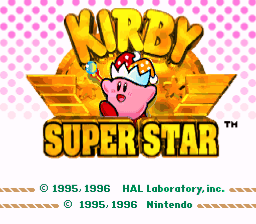
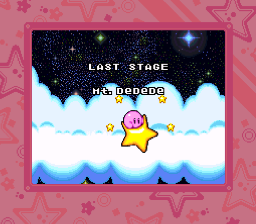
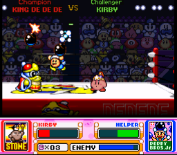
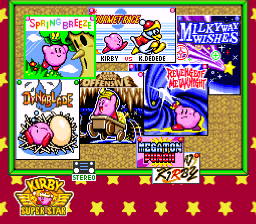

Kirby Super Star, released as Kirby's Fun Pak in PAL regions, is a 1996 anthology platform game developed by HAL Laboratory and published by Nintendo for the Super Nintendo Entertainment System. It is part of the Kirby series of video games by HAL Laboratory. The game was advertised as a compilation featuring eight games: seven short subsections with the same basic gameplay, and two minigames.
Kirby Super Star is a side-scrolling platform game. Similar to previous entries in the Kirby series, the player controls the titular character Kirby to complete various levels while avoiding obstacles and enemies. Kirby can walk or run, jump, swim, crouch, slide, and inhale enemies or objects to spit them out as bullets. He can fly for a limited time by inflating himself; while flying, Kirby cannot attack or use his other abilities, though he can release a weak puff of air. By eating certain enemies, Kirby can gain copy abilities, power-ups allowing him to take on the properties the enemy possessed. In Kirby Super Star, Kirby gains the ability to guard so he can defend himself from weak attacks.
Platformer, Multiplayer, Omnibus




SNES console
None